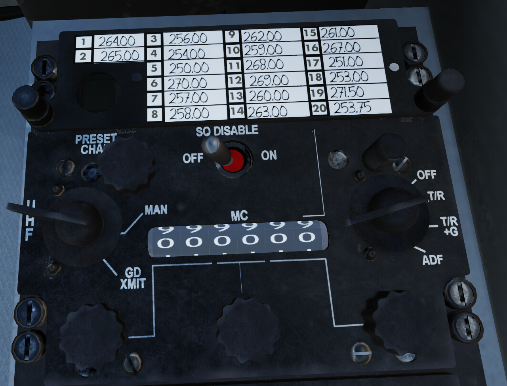

AN/ARC-51 UHF#
Overview#
The AN/ARC-51 UHF radio served as one of the most common military radios throughout the 70s. It operates with AM in the 225-400 MHz military communications band.
A seperate guard reciever on 243.0 MHz was also fitted, allowing the user to quickly monitor and transmit on guard.

Warning
TODO update image, caption, add number annotations
Switches#
1: Preset Frequency Card#
Your preset frequencies are listed on the frequency card, 1 through 20. With the Radio in preset mode, the number seen in the window in the bottom left displays the currently selected frequency.
Note
The presets cannot be set in the helicopter, and must be set in the mission editor, since the ground crew did the adjusting in real life.
2: Preset Selector Knob#
Knob used to select preset frequencies 1 through 20, only has any effect when the Transmit Mode Knob is set to "PRESET".
3: Transmit Mode Knob#
Knob used to adjust the frequency source. Three positions:
| Position | Function |
|---|---|
| PRESET | Frequency is sourced from the Preset Selector Knob |
| MAN | Frequency is sourced manually Frequency Tuning Knobs |
| GD XMIT | Pressing the PTT button with the UHF selected will transmit on guard, regardless of selected frequency |
Warning
TODO Fix above links in table, intercom needs a header to point to
4: Squelch Switch#
TODO get a good description of squelch from doogie